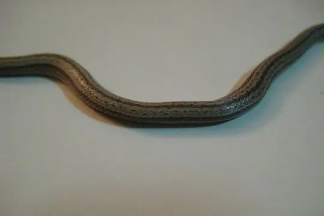
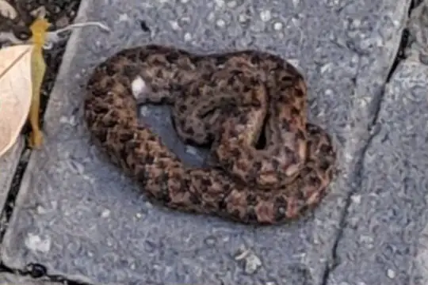
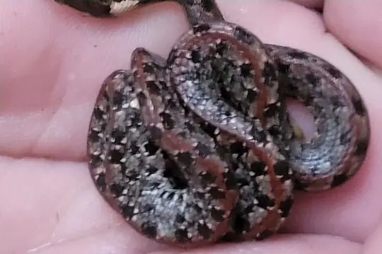
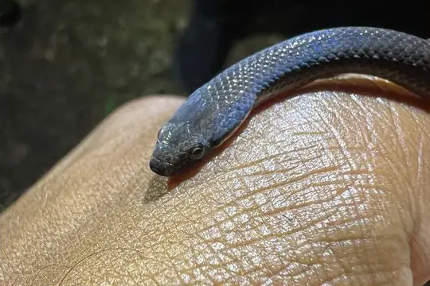
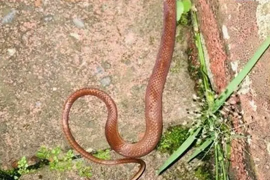

Snakes of Jamaica
10 snake species are recorded in Jamaica in SnakeList: 0 venomous and 10 non-venomous, from 4 families.
- 10species
- 10non-venomous
- 4families
These totals count the snakes SnakeList records as living in Jamaica. A species counts if it is recorded anywhere in the country, so not every snake lives in every region.
Species
Showing 10 species
- No photo yetBlack RacerHypsirhynchus ater
 Earthworm Blind SnakeTyphlops lumbricalis
Earthworm Blind SnakeTyphlops lumbricalis Jamaica Worm SnakeTyphlops jamaicensis
Jamaica Worm SnakeTyphlops jamaicensis
Jamaican Black GroundsnakeHypsirhynchus funereus Jamaican BoaChilabothrus subflavus
Jamaican BoaChilabothrus subflavus
Jamaican Brown TropeTropidophis jamaicensis
Jamaican Eyespot TropeTropidophis stejnegeri
Jamaican Long-tailed GroundsnakeHypsirhynchus polylepis
Jamaican Red GroundsnakeHypsirhynchus callilaemus- No photo yetPortland Ridge TropeTropidophis stullae
No snakes in Jamaica match.
Jamaica’s snakes in numbers
- Families: Colubridae 4, Tropidophiidae 3, Typhlopidae 2, Boidae 1.
- 9 are recorded in no other country in SnakeList: Black Racer, Jamaica Worm Snake, Jamaican Black Groundsnake, Jamaican Boa, Jamaican Brown Trope, Jamaican Eyespot Trope, Jamaican Long-tailed Groundsnake, Jamaican Red Groundsnake, Portland Ridge Trope.
States and provinces
The states and provinces where SnakeList records snakes, with how many species each has. Each page has its families, venomous snakes, the species found only there, its cities and neighbours.
- Hanover 1 species
- Manchester 2 species
- Portland 3 species
- Saint Andrew 2 species
- Saint Ann 1 species
- Saint Catherine 3 species
- Saint Elizabeth 4 species
- Saint James 2 species
- Saint Mary 1 species
- Saint Thomas 2 species
- Trelawny 1 species
No place matches that.
Cities
Its biggest cities, biggest first. Snakes are recorded by state or province, not by city, so each city page shows the snakes of the state or province it is in.
- Kingston Saint Andrew
- New Kingston Saint Andrew
No place matches that.